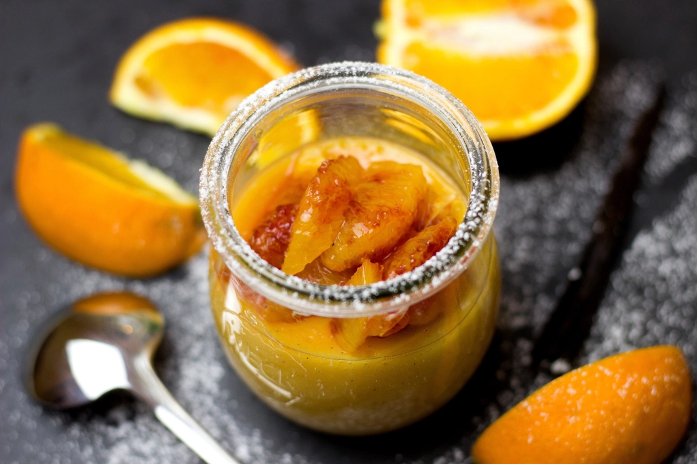

ABOUTお店の由来・想い
ミクロ発條は1954年創業のばねメーカーで、ボールペン用ばねで国内の大きなシェアを持つと紹介されています。カフェ名の「MIKURO」も、このミクロ発條の名前に由来すると考えられます(店名の意味そのものは確認できていません)。
内装は白を基調に、ゆったり配置した席とテラスがある明るい空間と紹介されています。このサイトでは、その「白く明るい空間」と「ばね」の連想から、らせんの飾りと鋼のような青灰色、コーヒーの茶色で配色しました。らせんは制作側のイメージです。
MENUメニュー
報道記事(2024年10月)で紹介されていたメニューの一例です。現在の内容は変わっている場合があります。価格・提供時間は準備中です。


Espresso with whipped cream (Unsplash) / Daniel Robert (danielrobertdinu) / CC0 1.0
珈琲ソフトクリーム
ばねの形のコーンで出す看板メニューと紹介されています。

ほかに、濃厚バニラソフトクリームやグリークヨーグルトも紹介されていました。詳しい内容は準備中。

Coffee Beans / megforce1 / CC0 1.0

Beans (42182293175) / Skitterphoto / CC0 1.0

Roasted coffee beans / MarkSweep / Public domain

Light, medium and dark roasted coffee beans / Your Best Digs / CC BY 2.0

題名不明(rawpixel掲載) / 作者記載なし / CC0 1.0

Croissant Isolated On White Background / personalgraphic.official / CC0 1.0

Croissant, whole / SKopp / CC BY-SA 3.0

Croissant, cross section / SKopp / CC BY-SA 3.0
VOICE口コミ(イメージ例)
実際のお客様の声ではなく、制作側が作成したイメージです。
白くて広い店内で、テラス席も気持ちよさそう。コーヒーを片手にゆっくりしたいです。
ばねの形のコーンのソフトクリームが、ちょっとした話のタネになりそう。友だちと行ってみたいです。
工場の1階にあるカフェというのが面白いです。散歩のついでに立ち寄れたらうれしいです。
ACCESSアクセス・店舗情報
| 住所 | 〒392-0022 長野県諏訪市高島1丁目21-16 |
|---|---|
| 電話 | 準備中 |
| 営業時間 | 準備中 |
| 定休日 | 準備中 |
| @mikuro_cafe |